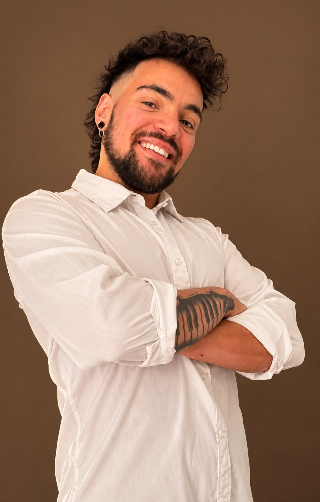
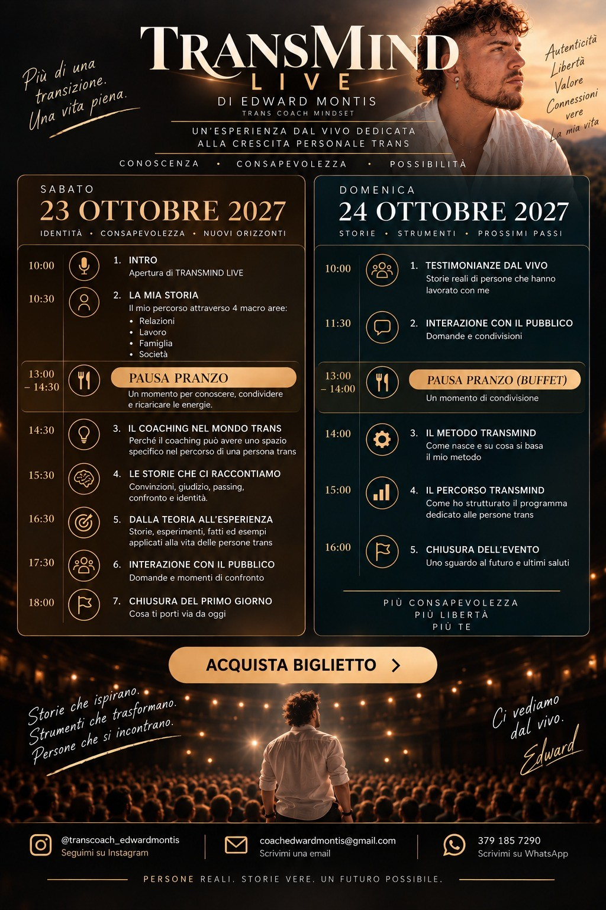

Non ti senti ancora abbastanza
Hai raggiunto obiettivi importanti nella tua transizione, ma continui a mettere in discussione il tuo valore.
Un'esperienza dal vivo dedicata alla crescita personale trans
Hai iniziato la terapia ormonale, affrontato interventi o raggiunto obiettivi importanti.
Eppure, forse, continui a sentirti insicurə, a temere il giudizio degli altri o a chiederti perché non riesci ancora a sentirti abbastanza.
TRANSMIND LIVE nasce per affrontare proprio ciò che spesso rimane in secondo piano: la tua crescita personale.
Due giornate dal vivo · Capienza del teatro: 300 posti
TRANSMIND LIVE · Edward Montis

L'evento
Puoi aver raggiunto traguardi che desideravi da anni e continuare ad avere difficoltà nel riconoscere il tuo valore.
Magari il giudizio degli altri influenza ancora le tue decisioni. Oppure ti confronti continuamente con altre persone, temi di non essere accettatə o senti di dover dimostrare qualcosa.
E se il prossimo passo non riguardasse ciò che devi cambiare fuori, ma il modo in cui vivi te stessə?
È da questa domanda che nasce TRANSMIND LIVE.
Ti riconosci?
Hai raggiunto obiettivi importanti nella tua transizione, ma continui a mettere in discussione il tuo valore.
Uno sguardo, un commento o un pronome sbagliato possono influenzare il modo in cui vivi determinate situazioni.
Il passing, l'aspetto fisico o il percorso altrui diventano il metro con cui misuri te stessə.
Nelle relazioni, in famiglia o sul lavoro senti di dover controllare ciò che dici o fai per paura delle reazioni.
Desideri affrontare nuove esperienze senza lasciare che la paura del rifiuto decida continuamente al posto tuo.
Non significa che il tuo percorso di transizione non sia servito. Significa che ci sono aspetti della tua crescita personale che meritano attenzione quanto gli obiettivi che hai già raggiunto.
I temi

Esploreremo come le esperienze vissute e le convinzioni sviluppate nel tempo possano influenzare la percezione che hai di te.

Affronteremo il bisogno di sentirsi abbastanza, il confronto con gli altri e la capacità di riconoscere il proprio valore.

Parleremo di quanto la paura del giudizio, del rifiuto e le aspettative altrui possano condizionare le nostre scelte.

Impareremo a riconoscere alcuni schemi di pensiero che possono ostacolare la crescita personale e a iniziare a metterli in discussione.
Il programma
Il programma completo di TRANSMIND LIVE, con tutti gli argomenti e gli orari delle due giornate.
Giorno 1 · Identità, consapevolezza, empowerment
Apertura di TRANSMIND LIVE.
Il mio percorso attraverso il mondo trans: esperienze, sfide e tappe della mia vita.
Un momento per conoscersi, condividere e ricaricare le energie.
Perché dedicare spazio alla crescita personale, alla consapevolezza e al proprio valore.
Convinzioni, giudizi, paure, confronto e identità.
Esercizi e spunti di riflessione da portare nella vita di tutti i giorni.
Domande e momenti di condivisione.
Cosa ti porti via da oggi?
Giorno 2 · Ascolto, strumenti, prossimi passi
Storie reali di persone che hanno lavorato su se stesse.
Domande e condivisione.
Un momento di condivisione.
Come nasce e su cosa si basa il mio metodo.
Come è strutturato il programma dedicato alla crescita personale trans.
Uno sguardo al futuro e nuove sfide.
Saranno un’occasione per fermarti, riflettere, confrontarti e osservare alcuni aspetti della tua vita da una prospettiva diversa.
Testimonianze
Ogni persona arriva con una storia diversa, con difficoltà, obiettivi ed esperienze che le appartengono.
Attraverso i percorsi individuali TRANSMIND, Edward Montis accompagna persone che desiderano lavorare sulla propria autostima, sulla sicurezza personale, sul giudizio e sul modo di vivere le relazioni.
Da quando sono con te coach, non so cosa sia successo, ma questo programma dovrebbe essere da prassi. È come se ad un certo punto sono io il comando della vita, e me ne sto sbattendo altamente del giudizio degli altri!
Ciao coach! Ti ringrazio perché grazie a te sono riuscita a superare questa paura del giudizio! Cosa che non sono riuscita a fare con altri professionisti! Grazie ancora!!
Ciao Edward! Voglio ringraziarti di questo percorso, perché mi hai davvero svoltato, non ho visto niente di simile! Grazie grazie.
Mi hai cambiato la vita. La visione delle cose. Non lo aveva fatto nemmeno il mio psicoterapeuta. Grazie davvero, ci dovrebbero essere persone come te.
Buonasera coach, ti scrivo a quest’ora che sono uscito dal lavoro, ho pensato molto al nostro percorso... devo dire che sono stupito del mio cambiamento. Quello che fai tu non si trova da nessuna parte. Sono davvero fiero di averti trovato! Sblocca più menti possibili, abbiamo bisogno di persone come te!
Le testimonianze provengono dai percorsi individuali TRANSMIND e non rappresentano risultati garantiti dell’evento TRANSMIND LIVE. Ogni esperienza è personale.
Edward Montis
Fondatore di TRANSMIND

Chi sono
Fondatore di TRANSMIND
Sono un uomo trans, coach con attestati di primo e secondo livello e attualmente studio Psicologia all'università.
Ho creato TRANSMIND con un obiettivo preciso: accompagnare le persone transgender e non binarie nella propria crescita personale, oltre i cambiamenti legati alla transizione.
Nel mio percorso ho compreso quanto sia importante raggiungere gli obiettivi che desideriamo, ma anche quanto il nostro rapporto con noi stessi possa continuare a influenzare la vita quotidiana.
Perché puoi cambiare il tuo corpo, i tuoi documenti, il modo in cui gli altri ti vedono, e continuare a portarti dentro convinzioni, paure e insicurezze.
Attraverso il mio lavoro mi occupo di mindset, autostima, identità, sicurezza personale, paura del giudizio e convinzioni limitanti.
Credo che la crescita personale non consista nel diventare qualcun altro, ma nel costruire un rapporto più consapevole con la persona che sei.
Perché volevo portare tutto questo oltre lo schermo.
Volevo creare un'esperienza in cui le persone trans e non binarie potessero incontrarsi, ascoltare storie diverse, confrontarsi e dedicare del tempo alla propria crescita personale.
Un'esperienza che non si concentri esclusivamente sui passaggi della transizione, ma anche su ciò che accade nella vita di tutti i giorni.
Nelle relazioni. In famiglia. Sul lavoro. Nella società.
Non voglio dirti chi devi essere. Voglio offrirti uno spazio in cui riflettere su come desideri vivere la tua vita.
È per questo che nasce TRANSMIND LIVE.
 Immagine d'atmosfera · non foto ufficiale
Immagine d'atmosfera · non foto ufficialeLa location
TRANSMIND LIVE si terrà presso il Teatro Teca, in uno spazio dedicato a due giornate di incontro, crescita personale e condivisione.
Capienza prevista: 300 posti.
Biglietti
23–24 ottobre 2027 · Teatro Teca · Cassano d’Adda (MI) · Capienza del teatro: 300 posti
Due giornate per ascoltare, condividere e crescere.
Il biglietto dà accesso alle due giornate di TRANSMIND LIVE, con gli interventi, le testimonianze e le attività previste nel programma.
Dopo aver inserito i dati, potrai scegliere il biglietto singolo o con accompagnatore.
Scegli il tuo bigliettoLa selezione del biglietto e il pagamento avvengono nella biglietteria TRANSMIND già esistente.
FAQ
No. TRANSMIND LIVE è rivolto a persone trans e non binarie in diverse fasi del proprio percorso.
Sì. L'evento affronta aspetti della crescita personale che possono essere importanti indipendentemente dalla fase della transizione.
Sì. TRANSMIND LIVE è pensato anche per le persone non binarie.
Sì. È previsto un biglietto accompagnatore, secondo le condizioni della biglietteria.
No. I momenti di condivisione rispettano la volontà e i confini personali di ciascuno.
Riceverai una conferma attraverso il sistema di biglietteria, secondo le modalità previste dal checkout.
No. È un evento dal vivo di due giornate, distinto dai percorsi individuali TRANSMIND.
La tua crescita personale non deve fermarsi agli obiettivi che hai raggiunto nella transizione.
Il 23 e 24 ottobre 2027 ci incontreremo dal vivo per parlare di identità, sicurezza, autostima, relazioni e di ciò che può aiutarti a vivere con maggiore consapevolezza.